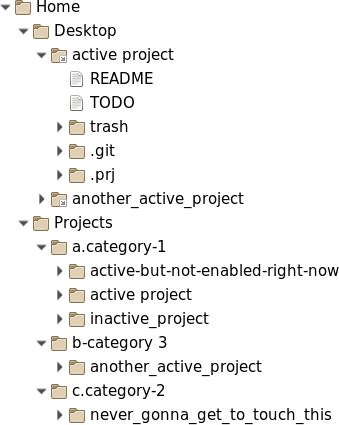

First thing you, really, have to do is to change the value of the variable doneconfiguring to Yes (note capitalisation). Otherwise the existing mechanism to prevent you from using the script without actually ever looking into it kicks in and prevents you from doing just that. Then it should work.
You shouldn't be afraid to change the code to fit your needs. Take your medicine. Eat your vegetables. Learn the shell. Try harder.
This script is called prj, but it can be called anything you want, really. Just change the name of the file. If you do that, then remember to rename the .prj configuration subdirectory accordingly in every project as well. More on that in a short while.
We will use the prj default name throughout our present documentation effort.
The whole idea is that you keep your work organised into projects in your home directory. Each project in its own directory, placed, itself, in special directories corresponding to categories.
If you dare to look inside the script (and you really should, as we discussed before), you'll notice there is a place to name the directory that will be hosting your current projects (the working category). Another directory will host all other categories, containing, themselves, other projects. Each project is, itself, a directory with some standard content inside to make the project manageable by the script.
Here's the required screenshot:

Except for the working category, that has a virtual name and prefix, which you can assign changing the values of the variables workingcategoryname and workingcategoryprefix, categories are named and prefixed after their directory names. Anything before a first dot in the name of the directory is the prefix. Anything after that is the category name. The prefix is used to sort them and as a short name for the category. So, if you want your VeryUrgent category to come before QuiteUrgent category, and that before NotUrgent, name the directories a.VeryUrgent, b.QuiteUrgent and c.NotUrgent, for example.
You can refer to the category by its name or by its prefix. Which is handy, since it's short.
The prefix will not, normally, be shown unless you dig manually inside the categories directory.
Each category can, then, hold as many projects as you like. Use them to categorise your projects by whatever criteria you might come up with. Just choose wisely or you'll be very sorry very soon.
By default, the working category is named Desktop and its prefix is 0 (that's a zero).
You can move projects from one category to another as you see fit.
Projects are the atoms of the whole thing.
Each project is a directory stored inside one of the categories. Let's take a look at what should be inside that directory.
1. A .git subdirectory. You can delete it if you don't want the project under git. Because of git, you might also have a .gitignore file. You can use this file to tell git to ignore the trash directory, if you wish (see below).
2. The .prj subdirectory. This is a configuration directory. You can use it to store a few items that, not being meant to be seen, are important for the behaviour of the script in relation to the particular project it is placed under.
The name of this directory is .prj because the default name of the script is prj. If ever you choose to rename the script something else, you have to change the name of this directory accordingly in every ancient project. Just look for how to use the for loop in your shell's manual. New projects will have it correctly named.
Inside this directory you can place scripts, meant to be run both: by the script using the mechanism prepared for that, and manually. For that to work, and for a nice integration with the script, the scripts must be executable files (obviously) named whatever you like but with a .sh extension. They must, also, print to stdout a little self description if called with aboutme as first and only argument, and a help message, if that argument is help.
You can also place special files indicating the relationship the project has with other projects. The script recognises any file called depends-<projectname> as a dependency on that project so far, and refuses to archive a project that still has dependencies. The content of these files is not used by the script at the moment, so you can use it to store notes about the reason why a project might be dependent on another.
You can also make use of this directory for other means you make up yourself (the idea of logs comes to mind, or new relations).
It is a good idea to keep this directory under git control.
3. A README file (note capitalisation), documenting your project. The first line of this file will be used as the description of your project.
4. A TODO file. Used to keep track of tasks related to the project.
The TODO file (note capitalisation) is where you keep track of tasks related to the project. Each line beginning with a * followed by a space and one of TODO or DONE (note capitalisation again) is a task to be dealt with or already done, respectively.
The resemblance with an org-mode file is not a coincidence. It is meant to be a super simplified one, so you can take advantage of the amazing work folks from the org-mode team did for us. If you never heard of it, look it up on the Internet.
5. A trash subdirectory. It's meant to store, well... trash: temporary files, notes, references to external objects... everything not truly belonging to the product of the project it is placed under, but somehow related. You can delete it after you are done with the project (all tasks have been completed), before you archive the project, to save space, or never have it in the first place (delete it since the beginning) if that's a really simple project or if it doesn't make sense. It is not required. This is a good candidate to populate your .gitignore file.
- OK. So let's make use of it, then.
The script accepts what we call verbs (they might not be actual verbs, in the grammatical sense) as its first argument. If you don't provide a valid one, it will fail printing a standard help message to stdout and fail.
If you do provide one of the following, the script will execute as follows:
In every other case, if anything else is entered in the place of the verb, the script will complain printing the standard help message and failing.
Type prj help in your shell prompt to see the following help message:
Name:
prj - A program to help you manage your projects and your chaotic home directory.
Usage:
prj [do] <projectname>
prj [done | fix | kill] <projectname(s)>
prj [help | listarchives|lsa | listcategories|lsc]
prj [killcategory] <categoryname(s)>
prj [list|ls | listprojects|lsp] [<categoryname(s)>]
prj [move|mv] <projectname> <categoryname>
prj [new] <projectname(s)>
prj [newcategory] <categoryname(s)>
prj [read | todo] <projectname>
prj [rename|rn] <projectname> <projectname>
prj [run] <projectname> <scriptname> [<scriptargument(s)]
prj [find] <expression>
prj [status|st] [<categoryname(s)>|<projectname(s)>]
prj [redo | undone] <archive(s)>